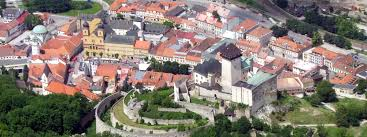

Trenčín (lat. Trentsinium alebo Laugaricio, nem. Trentschin) je jedno z troch najstarších slovenských miest a zároveň najväčšie a krajské mesto Trenčianskeho kraja.
Trenčín sa nachádza v severo-západnej časti Slovenska, je prirodzeným geografickým centrom stredného Považia. Hlavným tokom v meste je rieka Váh. Mesto je vzdialené približne 120 km severovýchodne od hlavného mesta Slovenska – Bratislavy. Vďaka strategicky výhodnej polohe miesta tu bol vybudovaný Trenčiansky hrad. Aj v súčasnosti je Trenčín významným centrom obchodu, hospodárstva, kultúry a športu. Svoje sídla a pobočky tu majú mnohé inštitúcie a spoločnosti. Dlhoročnú tradíciu v meste majú výstavy a veľtrhy, mesto je známe i ako mesto módy.
Podľa Štatistického úradu SR je Trenčín 8. najväčším slovenským mestom podľa počtu obyvateľov. Z hľadiska administratívneho členenia Slovenskej republiky je správnym centrom Trenčianskeho kraja, ktorý tvorí 9 okresov: Bánovce nad Bebravou, Ilava, Myjava, Nové Mesto nad Váhom, Partizánske, Považská Bystrica, Prievidza, Púchov a samotný Trenčín.
Trenčiansky úsek stredného Považia zároveň možno považovať za jednu z najsúvislejšie urbanizovaných aglomerácií na Slovensku. Predstavuje ju predovšetkým územie tiahnúce sa 20 kilometrov na severovýchod od Trenčína, na ktorom leží postupne päť miest – Nemšová, Trenčianske Teplice, Nová Dubnica, Dubnica nad Váhom a Ilava.